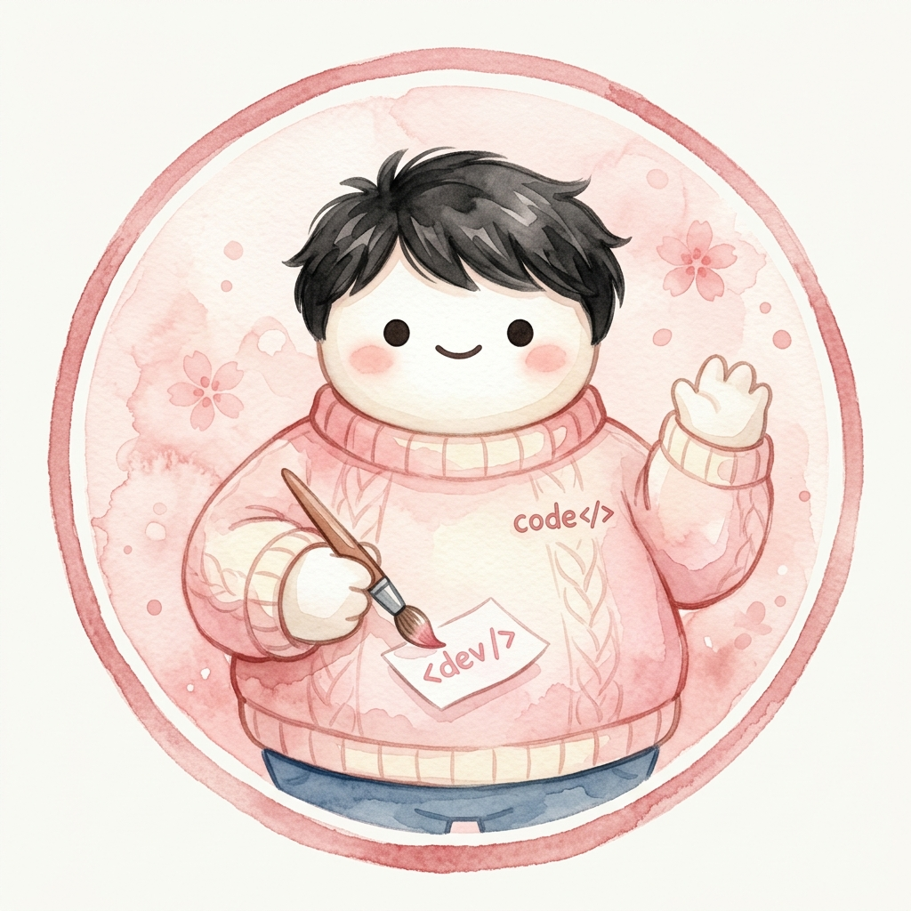

わたしについて

Web Designer / Creator
群馬県出身。高崎商科大学卒業後、信用金庫・物流会社を経験。働く中で「自分の力で稼げるスキルを身につけたい」という想いが芽生え、2025年12月、信頼できる人が運営するWeb制作スクールへ入学。
仕事と並行しながら学習を続け、2026年4月に退職しWeb制作に専念。カフェ・美容室・コーポレート・ECなど幅広い業種のサイト制作を経験。AIツールを活用したスピーディーな提案力を武器に成長中。
自分が豊かになったら、周りの人にも豊かになってほしい。クライアントと心を込めて一緒に作るWeb制作を目指しています。まだ駆け出しですが、誠実に、真剣に向き合います。
スキル
マークアップ言語。サイトの骨格を構築します。
スタイリング。デザインをコードで表現します。
インタラクション。動きをつけて体験を豊かに。
バージョン管理ツール。コードの履歴管理・保存に活用しています。
デプロイメントツール。制作したサイトの公開・管理に使用しています。
使用ツール